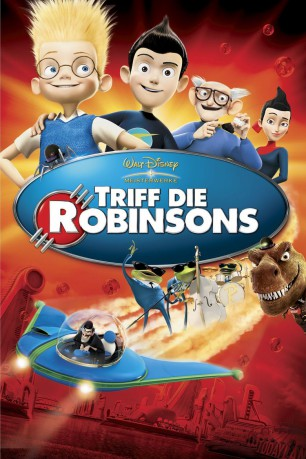

Alternativ: Meet the Robinsons gesehen am 18.03.2015
gesehen am 18.03.2015
 
 IMDB-Wertung: 6.9 / 10
IMDB-Wertung: 6.9 / 10  Metascore:
Metascore: 
Lewis ist ein brillantes Kerlchen. Doch der 12-Jährige wartet einsam im Waisenhaus darauf, von einer Familie aufgenommen zu werden. Er erfindet einen Gedankenscanner, um herauszufinden, warum ihn seine Mutter zur Adoption freigab. Daraufhin wird der Apparat von dem bösen Melonenmann und seinem lebenden Hut Doris gestohlen. Zum Glück taucht der geheimnisvolle Wilbur auf, der ihn mit seiner Zeitmaschine in die Zukunft nimmt. Dort trifft Lewis auf dessen total verrückte Familie, ein Haufen liebenswerter Exzentriker. Und auf den Melonenmann...
Jahr: 2007
Dauer: 95 Minuten
FSK: 0
Land: USA Studio: Buena Vista PicturesTonspuren: DTS - ,
Untertitel:
Auflösung: 1080p (1920x1080) Größe: 7966 MB
Genre: Animation/Trick, Abenteuer, Komödie, Familie, Sci-Fi
Regisseur: Stephen J. Anderson
Drehbuch: Jon Bernstein, Michelle Bochner Spitz, Don Hall, Nathan Greno, Aurian Redson
Soundtrack: Danny Elfman
Darsteller:
 Angela Bassett als Mildred
Angela Bassett als Mildred Dara McGarry als Mrs. Harrington / Receptionist
Dara McGarry als Mrs. Harrington / Receptionist Tom Kenny als Mr. Willerstein
Tom Kenny als Mr. Willerstein Laurie Metcalf als Lucille Krunklehorn
Laurie Metcalf als Lucille Krunklehorn Paul Butcher als Stanley
Paul Butcher als Stanley Jessie Flower als Young Franny
Jessie Flower als Young Franny Stephen J. Anderson als Bowler Hat Guy / Grandpa Bud / Tallulah
Stephen J. Anderson als Bowler Hat Guy / Grandpa Bud / Tallulah Harland Williams als Carl
Harland Williams als Carl Nathan Greno als Lefty
Nathan Greno als Lefty Adam West als Uncle Art
Adam West als Uncle Art Nicole Sullivan als Franny
Nicole Sullivan als Franny Tom Selleck als Cornelius
Tom Selleck als Cornelius Joe Whyte als Reporter
Joe Whyte als Reporter David Cowgill als
David Cowgill als  Terri Douglas als
Terri Douglas als  Jordan Del Spina als
Jordan Del Spina als  Grace Rolek als
Grace Rolek als  Fred Tatasciore als
Fred Tatasciore als  Kelly Hoover als Aunt Billie
Kelly Hoover als Aunt BillieDatei: X:\Kinder Disney HD\2000-2018\Triff die Robinsons (2007, FSKo.Al., 1920x1080) 3D.mkv seit 02.03.2015
Festplatte: Kinder-Filme+Trick
 Es gibt insgesamt 45 Filme in der Gruppe 'Kinder Disney HD\2000-2018'
Es gibt insgesamt 45 Filme in der Gruppe 'Kinder Disney HD\2000-2018'